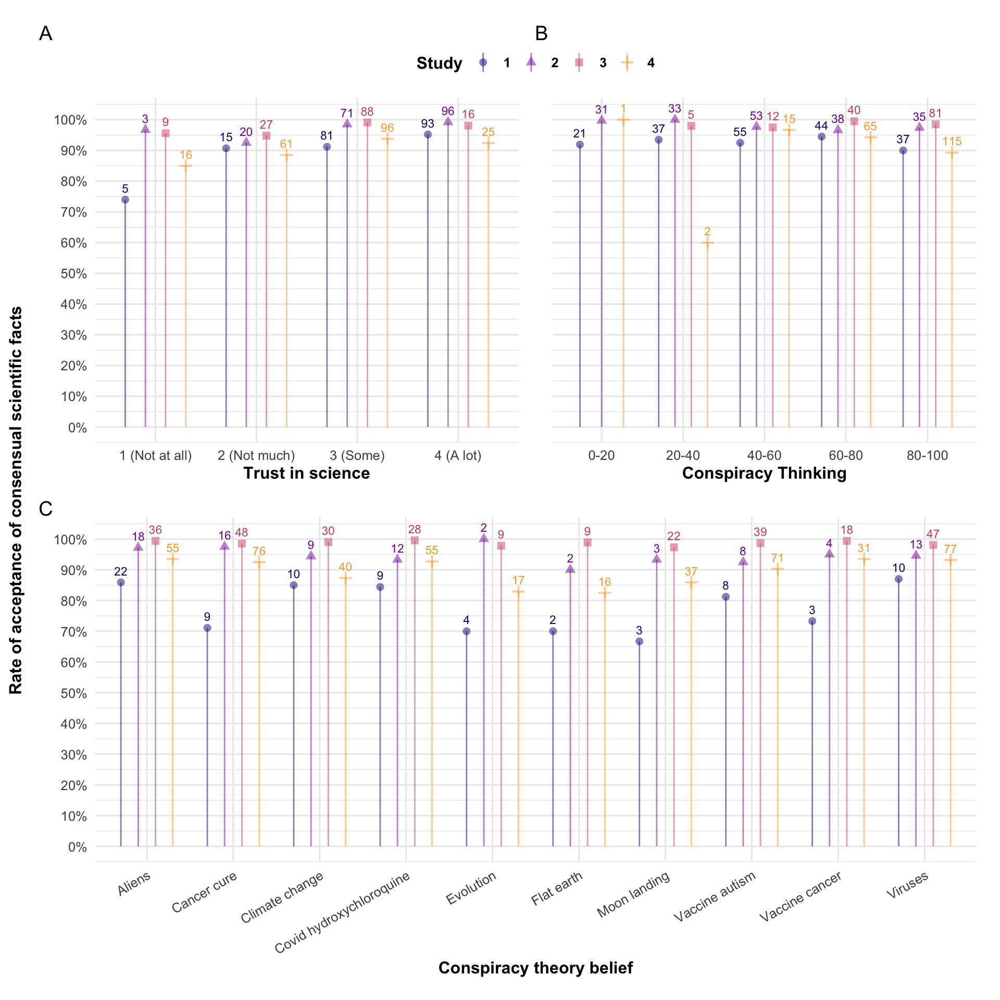

| Study 1-3 | Study 4 | |
|---|---|---|
| 1 | Do antibiotics kill viruses as well as bacteria? [Yes, both; No, only viruses; No, only bacteria] | For which disease is the drug bedaquiline, developed in 2007, a treatment? [Tetanus; Tuberculosis; Malaria] |
| 2 | Are electrons smaller, larger, or the same size as atoms? [Smaller; Same size; Larger] | What is the maximum speed a proton can attain in the largest particle collider as to 2015? [90% of the speed of light; 99% of the speed of light; the speed of light] |
| 3 | Have the continents on Earth been moving for millions of years or have they always been where they are now? [They have been moving; They have always been where they are now] | Kepler-452b is an exoplanet revolving around the star Kepler-452. How far away from the star is it, as established by astronomers in 2015? [97 million mi; 1,2 million mi; 1254 million mi] |
| 4 | What decides whether a baby is a boy or a girl ? Is it the father's genes, the mother's genes, or both? [The mother's genes; the father's genes; both] | Using bomb-pusle dating with carbon 14, what is the age of the oldest known vertebrate, as established in 2016? [138 years; 205 years; 392 years] |
| 5 | Do lasers work by focusing sound waves? [Yes; No] | How many more glial cells are there in the brain in comparison with neurons, as established in 2016? [The same amount; Twice as many; Ten times as many] |
| 6 | How long does it take for Earth to go around the sun: one day, one month, or one year? [One day; One month; One year] | As predicted by the general theory of relativity, how many times would the Earth keep orbiting if the Sun disappeared, as established in 2012? [47 seconds; 8 minutes; 2 hours] |
| 7 | Are diamonds made of carbon? [Yes; No] | What is the electric charge of the Higgs Boson, as established in 2012? [1.602176634 x 10-19; 0; 3.2x10-19C] |
| 8 | Which travels faster : light or sound? [Light; Sound] | What is the age of the oldest materials formed on Earth, as established in 2020? [Less than 4.6 Ga; Around 4.6 Ga; More than 4.6 Ga] |
| 9 | Is common table salt made of calcium carbonate? [Yes; No] | With the best current cloning techniques, what is the average success rate when operated on mice, as of 2010? [2,7%; 9,4%; 17,2%] |
| 10 | Is water made of molecules containing one oxygen and two hydrogen atoms? [Yes; No] | What was the strength of the Earth magnetic field 3.7 billion years ago, as discovered this year? [15 microtesla; 30 microtesla; 45 microtesla] |
| 11 | *Where do trees mainly draw the materials with which they create their mass? [Earth; Water; Air] | |
| * Only used in Study 1 |
6 Quasi-universal acceptance of basic science in the US
Abstract
Many people report a low degree of trust in science, or endorse conspiracy theories that violate basic scientific knowledge. This might indicate a wholesale rejection of science in substantial segments of the population. In four studies, we asked 782 US participants questions about trust in science, conspiracy beliefs, and basic science (e.g. the relative size of electrons and atoms). Participants were provided with the scientifically consensual answer to the basic science questions, and asked whether they accept it. Acceptance of the scientific consensus was very high in the sample as a whole (95.1%), but also in every sub-sample (e.g., no trust in science: 87.3%; complete endorsement of flat Earth theory: 87.2%). This quasi-universal acceptance of basic science suggests that people are motivated to reject specific scientific beliefs, and not science as a whole. This could be leveraged in science communication.
available as a preprint here:
Pfänder, J., Kerzreho, L., & Mercier, H. (2025). Quasi-universal acceptance of basic science in the US. https://doi.org/10.31219/osf.io/qc43v_v2
For supplementary materials, please refer to the preprint.
6.1 Introduction
Trust in science is related to many desirable outcomes, from acceptance of anthropogenic climate change (Cologna and Siegrist 2020) or vaccination (Sturgis, Brunton-Smith, and Jackson 2021; Lindholt et al. 2021) to following recommendations during COVID (Algan et al. 2021, which suggests that trust in science was the most important predictor of these behaviors).
Although recent global evidence shows that trust in science is moderately high (Cologna et al. 2024), it is far from being at ceiling. Large-scale polls have shown that people who report a high degree of trust in science are a minority in most countries, and they are outnumbered by people who have low trust in science in many areas, e.g., most of Africa and significant parts of Asia (Wellcome Global Monitor 2018, 2020). Moreover, trust in science has recently been declining in some countries (Algan et al. 2021; Brian and Tyson 2023; although see Wellcome Global Monitor 2021; and Funk and Kennedy 2020) and in the US it is increasingly polarizing (Gauchat 2012; Krause et al. 2019; Li and Qian 2022).
Besides low answers on general trust in science questions, another indicator of distrust in science is the belief in conspiracy theories that question the scientific consensus on issues such as vaccination, climate change, and even the shape of the Earth. Conspiracy theories–in the realm of science or elsewhere–typically accuse a small group of powerful people to pursue nefarious goals in secrecy (Douglas et al. 2019; Mede and Schäfer 2020). Some of these conspiracy theories are widespread (Rutjens and Većkalov 2022). In 2023, a survey in eight different countries found that up to 24% of respondents agreed that “climate change is a hoax and scientists touting its existence are lying” (Stockemer and Bordeleau 2024). Similarly, in 2021, 40% of Americans believed that “the dangers of genetically-modified foods are being hidden from the public” (down from 45% in 2020, Uscinski et al. 2022). People who hold such views not only reject the relevant scientifically consensual facts, but also tend to believe in other conspiracy theories (Lewandowsky, Gignac, and Oberauer 2013; Hornsey, Harris, and Fielding 2018a, 2018b), and tend to say that they distrust science more generally (Vranic, Hromatko, and Tonković 2022; Stockemer and Bordeleau 2024). In spite of these correlations, the causal relationship between declaring general distrust in science and believing in one or several anti-science conspiracy theories is not clear. Although conspiracy thinking has been identified as a “root cause” of anti-science attitudes (Hornsey and Fielding 2017) in the past, these claims rest largely on observational data.
What does this apparent lack of trust in science actually entail? Do people who say they do not trust science, or who believe in conspiracy theories at odds with well-established science, reject most of science? Or, on the contrary, do they object to a few specific facets of science, while still accepting the overwhelming majority of basic science?
A common conception of trust is a willingness to be vulnerable to another party, whether an individual, a group, or an institution (Mayer, Davis, and Schoorman 1995; Rousseau et al. 1998). Accordingly, trust in science has been defined as “one’s willingness to rely on science and scientists (as representatives of the system) despite having a bounded understanding of science” (Wintterlin et al. 2022, 2). Past research has disentangled this general concept of trust in science in various ways. Some research has identified different components of trust, the number of which varies, but which generally cover an epistemological and ethical dimension (Wilholt 2013; Intemann 2023). For example, Hendriks, Kienhues, and Bromme (2015) suggest distinguishing between expertise/competence, integrity, and benevolence, while Besley, Lee, and Pressgrove (2021) add openness. Other research has highlighted differences in trust between scientific disciplines (Altenmüller, Wingen, and Schulte 2024; Gligorić, Kleef, and Rutjens 2024; Gauchat and Andrews 2018). However, little research has assessed trust in specific scientific findings, besides contentious topics such as vaccines (e.g. Hornsey, Harris, and Fielding 2018a), climate change (e.g. Stockemer and Bordeleau 2024), evolution (e.g. Nadelson and Hardy 2015), genetically modified organisms (GMOs) [e.g. ; Fernbach et al. (2019)], or a combination of such topics (see e.g. Lewandowsky, Gignac, and Oberauer 2013). To the best of our knowledge, no research has investigated the extent to which people trust basic science facts (e.g. electrons are smaller than atoms). An extensive literature on science literacy has assessed whether people know such facts (National Academies of Sciences, Engineering, and Medicine 2016), but not whether they accept the facts once presented to them.
Why does it matter whether trust in science is or is not related to trust in specific scientific findings? First, this question has theoretical implications. According to the most prominent explanation of (dis)trust in science–the deficit model–science knowledge is the main driver of attitudes towards science in general. A prediction of this model is that average trust in science on specific facts should be strongly associated with general trust in science. By contrast, a disconnect between the two would be in line with motivated reasoning accounts of trust in science. According to these accounts, science rejection serves to maintain coherence with other beliefs or behaviors (Lewandowsky and Oberauer 2016; Hornsey 2020). For example, someone might say they do not trust science in general because they are skeptical towards vaccines, not because they actually distrust most of science. A prediction of the motivated reasoning account is that general trust in science should be strongly correlated with conspiracy beliefs. Second, the present question has practical implications: Many communication attempts leverage the scientific consensus (e.g. on vaccination, climate change, etc., for review, see Van Stekelenburg et al. 2022; see also Većkalov et al. 2024). These attempts are more likely to be successful if everyone trusts basic science than if some people reject science wholesale.
6.1.1 The present studies
In a series of four pre-registered online studies (total n = 782), we asked US participants questions about well-established, consensual scientific facts. For each question, we asked participants what they thought the correct answer was (testing their knowledge of science), we informed them of the scientifically accepted answer, and asked them whether they accepted it (measuring their trust in basic science). We also measured participants’ trust in science using standard measures, as well as their beliefs in various conspiracy theories and their tendency to engage in conspiratorial thinking. The four studies, including materials, hypotheses, and analyses, were pre-registered and all materials and data are accessible via the Open Science Framework (https://osf.io/8utsj/). The differences between the four studies are summarized presently, and the methods are detailed below.
6.1.1.1 Materials
In Study 1 (data collected on March 5, 2024), we used questions drawn from questionnaires of scientific knowledge (e.g. “Are electrons smaller, larger, or the same size as atoms? [Smaller; Same size; Larger]”), supplemented by a ‘trick’ question (“Where do trees mainly draw the materials with which they create their mass? [Earth; Water; Air]”; correct answer: Air). In Studies 2 (data collected on April 3, 2024) and 3 (data collected on April 22, 2024), this last question was removed. The scientific facts used in Studies 1 to 3 represent long-established and basic knowledge. In Study 4 (data collected on August 13, 2024) we used more recent, much less basic scientific discoveries (e.g. “What is the electric charge of the Higgs Boson, as established in 2012? [1.602176634 × 10-19; 0; 3.2×10-19C]”; correct answer: 0, i.e. electrically neutral).
6.1.1.2 Presentation of the scientific consensus
In Study 1, we simply told participants that they would be provided with the scientifically consensual answer. However, for participants to accept this answer, they must not only trust science, but also trust that we are presenting them with the actual scientifically consensual answer. To remove this issue, in Studies 2 to 3, we presented participants with a short explanation of the correct answer, as well as links to three sources per answer (e.g. Wikipedia, National Geographic or NASA). In Study 4, as the topics were more complex, we did not provide an explanation, but still provided two sources per answer.
6.1.1.3 Measure of acceptance of the scientific consensus
In Study 1, we simply looked at whether participants accept the scientifically consensual answer or not. In the subsequent studies, we asked participants to explain cases in which they disagreed with the scientific consensus. This revealed that a number of participants had made a mistake (misunderstanding, selecting the wrong answer). As a result, in Studies 3 and 4, participants who have indicated that they rejected the scientifically consensual answer were offered the option to revise their answer, or to keep rejecting it.
6.1.1.4 Additional questions
In Studies 3 and 4, we attempted to understand how some people who say they do not trust science still accept scientifically consensual answers, by asking them whether they accepted the answers on the basis of trust in science or because they had independently verified them.
6.1.1.5 Samples
Studies 1 and 2 were conducted on the standard sample of US participants recruited on the platform Prolific Academic. In order to increase the share of participants with low trust in science, and who endorse conspiracy theories, Studies 3 and 4 used the same platform, but only recruited participants who had declared previously being skeptical of vaccination.
6.1.1.6 Hypotheses
The main goal of the present studies is descriptive: to find out whether participants who report not trusting science, or who believe in conspiracy theories, still accept most well-established scientific facts. However, based on our literature review, we also tested two directional hypotheses (pre-registered as research questions in the Study 1):
H1: Higher trust in science is associated with more science knowledge and more acceptance of the scientific consensus
H2: Higher conspiracy thinking/belief is associated with less science knowledge and less acceptance of the scientific consensus
6.2 Methods
6.2.1 Deviations from preregistration
For Study 2, we restricted our main hypotheses about acceptance to cases in which participants initially provided a wrong answer. However, this meant the more participants had initially provided correct answers, the fewer opportunities they had for accepting correct answers. We provide results on these conditional correlations–for Study 2 and for all other studies–in the ESM 1. However, for the analysis presented here, we proceeded as preregistered for all other studies, by reporting unconditional correlations between acceptance and trust in science, or, respectively, conspiracy belief.
6.2.2 Procedure
After providing their consent to participate in the study, participants were given an attention check “While watching the television, have you ever had a fatal heart attack?” [1-6; 1 = Never, 6 = Often]. All participants who did not answer “1 = Never” were excluded. Participants then read the following instructions:“We will ask you 10 questions about science. After each question, we will provide you with the scientifically consensual answer and ask whether you accept it.” Next, participants answered a set of 10 basic science questions in random order. After each question, participants were presented with an answer reflecting the scientific consensus, and asked whether they accepted it. In Studies 2 and 3, participants additionally saw a short explanation, partly based on explanations generated by ChatGPT, and three links to authoritative sources supporting the answer. In Study 4, we provided only two links and no explanation. Participants then answered questions on conspiracy thinking, conspiracy beliefs, and trust in science.
In Studies 2, 3, and 4, we presented participants with open-ended questions so they could explain their rejection of the scientific consensus. In Studies 3 and 4, we additionally gave participants the option to change their answer and accept the scientific consensus. Finally, at the end of Studies 3 and 4, we asked participants: “For the questions in which you agreed with the scientific consensus, would you say that…?” The answer options were: (i) “You mostly agree with the consensus because, on that question, you trust scientists”, (ii) “You mostly agree with the consensus because you have been able to independently verify it”, and (iii) “Other”, with a text box for participants to explain. Participants who selected “You mostly agree with the consensus because you have been able to independently verify it”, were asked the open-ended follow-up question: “Could you please tell us how you independently verified the information?”.
6.2.3 Participants
After removing failed attention checks, the total sample size was 782 (194 in Study 1, six failed attention checks; 190 in Study 2, 11 failed attention checks; 200 in Study 3, no failed attention checks; 198 in Study 4, two failed attention checks) participants in the US, recruited through Prolific. Details and demographics can be found in the online supplemental material. While samples for Studies 1 and 2 were convenience samples, Studies 3 and 4 were conducted on a sample holding vaccine-skeptic beliefs. Prolific allows selecting participants based on their answers to a range of questions. We picked three of these questions and only recruited participants who met our criteria for each of them:
- “Please describe your attitudes towards the COVID-19 (Coronavirus) vaccines: [For (I feel positively about the vaccines); Against (I feel negatively about the vaccines); Neutral (I don’t have strong opinions either way); Prefer not to say]”. We selected participants who answered “Against”.
- “Have you received a coronavirus (COVID-19) vaccination? [Yes (at least one dose); No; Prefer not to answer]”. We select only people who answered “No”.
- “On a scale from 1-7, please rate to what extent you agree with the following statement: I believe that scheduled immunizations are safe for children. [1 (totally disagree); 2 (disagree); 3 (somewhat disagree); 4 (neither agree nor disagree); 5 (somewhat agree); 6 (agree); 7 (totally agree); rather not say]”. We select only people who answered “1”, “2”, or “3”.
6.2.4 Materials
6.2.4.1 Scientific facts
Studies 1 to 3 used 10 facts drawn from widely used questionnaires about science knowledge (Allum et al. 2008; Durant, Evans, and Thomas 1989; Miller 1998) sometimes referred to as the “Oxford scale” (Gauchat 2011). A ‘trick’ question was added in Study 1 and removed as its wording proved unclear. Study 4 used 10 more recent scientific discoveries. Table 6.1 shows all questions and their answer options.
6.2.4.2 Conspiracy beliefs
We selected 10 science/health related conspiracy theories from the Belief in Conspiracy Theory Inventory (BCTI) (Pennycook, Binnendyk, and Rand 2022) (Table 6.2). Participants were asked: “Below is a list of events for which the official version has been disputed. For each event, we would like you to indicate to what extent you believe the cover-up version of events is true or false. [1-9; labels: 1 - completely false, 5 - unsure, 9 - completely true]”.
6.2.4.3 Conspiracy thinking
For all results presented here, we used the four-item conspiracy mentality questionnaire (CMQ) (Bruder et al. 2013). We also assessed the single item conspiracy beliefs scale (SICBS) (Lantian et al. 2016). Details and comparisons between the scales can be found in the ESM.
| 1 | The Apollo moon landings never happened and were staged in a Hollywood film studio. |
| 2 | A cure for cancer was discovered years ago, but this has been suppressed by the pharmaceutical industry and the U.S. Food and Drug Administration (FDA). |
| 3 | The spread of certain viruses and/or diseases is the result of the deliberate, concealed efforts of vested interests. |
| 4 | The claim that the climate is changing due to emissions from fossil fuels is a hoax perpetrated by corrupt scientists who want to spend more taxpayer money on climate research. |
| 5 | The Earth is flat (not spherical) and this fact has been covered up by scientists and vested interests. |
| 6 | There is a causal link between vaccination and autism that has been covered up by the pharmaceutical industry. |
| 7 | In the 1950s and 1960s more than 100 million Americans received a polio vaccine contaminated with a potentially cancer-causing virus. |
| 8 | Proof of alien contact is being concealed from the public. |
| 9 | Hydroxychloroquine has been demonstrated to be a safe and effective treatment of COVID and this information is being suppressed. |
| 10 | Dinosaurs never existed, evolution is not real, and scientists have been faking the fossil record. |
6.2.4.4 Trust in science
In all analyses reported in the main paper, we measure trust in science via a question selected from the Wellcome Global Monitor surveys (Wellcome Global Monitor 2018, 2020): “In general, would you say that you trust science a lot, some, not much, or not at all? [1 = Not at all, 2 = Not much, 3 = Some, 4 = A lot]”. We chose this question as it seemed to be the most general one. In the ESM, we additionally report results for two alternative measures of trust included in our studies: Another from the WGM surveys (“How much do you trust scientists in this country? Do you trust them a lot, some, not much, or not at all? [1 = Not at all, 2 = Not much, 3 = Some, 4 = A lot]”), and one from the Pew Research Center (e.g. Funk, Johnson, and Hefferon 2019) (“How much confidence do you have in scientists to act in the best interests of the public? [1-5; 1 = No confidence at all, 5 = A great deal of confidence]”), the latter having been used in a recent international study on trust in science (Cologna et al. 2024). We selected these items so that we could compare the answers in our sample to global survey results. We find that all three items are highly correlated throughout all studies, and that our results reported here generally replicate when using either of the alternatives measures2 (see ESM).
6.3 Results

The main outcome of interest is acceptance of the scientifically consensual facts presented. Overall, acceptance was very high (aggregating across all studies: 95.1 %; Studies 1: 93 %; 2: 98 %; 3: 98 %; 4: 91 %). Note that this includes both participants who had previously correctly answered the knowledge question, and participants who changed their mind when presented with the scientific consensus. In Studies 3 and 4, we gave participants a second chance in case they had initially rejected the consensus, which slightly increased acceptance rates in those studies (initial acceptance in Studies 3: 96 %; 4: 86 %).
As shown in Figure 6.1, these very high rates of acceptance hold for: participants who do not trust science at all (4.2 % of participants, acceptance rate of 87.3 %), participants who rank in the top two deciles of the conspiracy thinking scale (34.3 % of participants, acceptance rate of 93.2 %), participants who consider as “completely true” (the maximum of the 9-point scale) conspiracy theories stating that the earth is flat (3.7 % of participants, acceptance rate of 87.2 %), or that climate change due to fossil emissions is a hoax (11.4 % of participants, acceptance rate of 91.7 %).
Participants in the lowest decile of acceptance still had an average acceptance rate of 67.4 %. Even the three participants who considered as “completely true” that the earth is flat and who said they do “not trust science at all” had an average acceptance rate of 86.7 %.
These high acceptance rates do not merely reflect science knowledge: participants only correctly answered 65.8 % of the questions (Studies 1: 74 %; 2: 79 %; 3: 75 %; 4: 36 %) before they were provided with the scientifically consensual answer. Even the lowest decile in science knowledge, which on average answered correctly only on 20 % of the questions, had an average acceptance rate of 91.7 %.
Did participants who had initially provided a wrong answer change their minds towards the scientific consensus? Yes. In most cases (Studies 1: 76.3 %; 2: 92.9 %; 3: 95.5 %; 4: 89.5 %), participants readily accepted the scientific consensus after having initially given the wrong answer to a question.
How do knowledge and acceptance relate to declared general trust in science and conspiracy belief (two strongly correlated variables, pooled r = -0.636, p < .001)?
Regarding H1, we find a consistent association between trust in science and acceptance of the scientific consensus (Studies 1: r = 0.272, p < .001; 2: r = 0.299, p < .001; 3: r = 0.198, p = 0.019; 4: r = 0.155, p = 0.029), but a less consistent relation between trust in science and science knowledge (Studies 1: r = 0.29, p < .001; 2: r = 0.279, p < .001; 3: r = 0.14, p = 0.100; 4: r = 0.104, p = 0.144).
Regarding H2, the results are mixed for the relation of conspiracy beliefs (measured as the average acceptance of all the conspiracy beliefs) with both acceptance of the scientific consensus (Studies 1: r = -0.334, p < .001; 2: r = -0.371, p < .001; 3: r = -0.023, p = 0.788; 4: r = -0.048, p = 0.498) and science knowledge (Studies 1: r = -0.385, p < .001; 2: r = -0.402, p < .001; 3: r = -0.164, p = 0.055; 4: r = -0.023, p = 0.742).
Why did participants reject the scientific consensus? We collected a total of 364 answers (Studies 2: 35; 3: 74; 4: 255) from 167 (Studies 2: 25; 3: 47; 4: 95) participants to the open-ended questions on why they had rejected the scientific consensus on a particular question. Based on the answers, we created five categories (Table 6.3). All individual answers can be accessed in cleaned data sheets via the OSF project page.
| Category | N (instances) | Share (instances) | N (participans)* |
|---|---|---|---|
| Not convinced | 158 | 43.4% | 70 |
| No justification | 103 | 28.3% | 51 |
| Personal convictions | 43 | 11.8% | 31 |
| Mistake | 42 | 11.5% | 34 |
| Religious Beliefs | 18 | 4.9% | 13 |
| Note: *Participans with at least one answer in that category |
Why did participants say they accept the scientific consensus? In Studies 3 and 4–the vaccine hesitant samples–we had asked participants about cases in which they agreed with the scientific consensus. A total of 320 (Studies 3: 122; 4: 198) participants answered this question. There were more participants saying they accepted the scientific consensus because they independently verified the fact (Studies 3: 47.5%; 4: 47% ), than participants saying it was because they trust scientists (Studies 3: 41.8%; 4: 36.4%)3. Answers to a question about how they had done so can be found in the ESM.
In an exploratory analysis, we ran linear regressions to test whether there are differences between participants who said they had trusted science and those who said they had verified the information independently. Participants who said they accepted the consensus because of trust in scientists reported trusting science more (Studies 3: mean = 3; \(\hat{\beta}_{\text{Trust}}\) = 0.192, p = 0.330 on a scale from 1 to 4; 4: mean = 2.92; \(\hat{\beta}_{\text{Trust}}\) = 0.465, p < .001) than those who said they verified independently (Studies 3 mean = 2.81; 4: mean = 2.45). We did not find a difference regarding acceptance (Studies 3: \(\hat{\beta}_{\text{Acceptance}}\) = 0.007, p = 0.523 on a scale from 0 to 1; 4: \(\hat{\beta}_{\text{Acceptance}}\) = 0.039, p = 0.116) or regarding beliefs in conspiracy theories (Studies 3: \(\hat{\beta}_{\text{BCTI}}\) = -0.163, p = 0.694 on a scale from 1 to 9; 4: \(\hat{\beta}_{\text{BCTI}}\) = -0.21, p = 0.322). We also did not find a difference in time spent on the survey in Study 3 (\(\hat{\beta}_{\text{Time}}\) = -0.02, p = 0.985; median = 7.6416667 mins), but in Study 4, people who said they had accepted the consensus because they they trust scientists tended to spend on average two minutes less on the survey (\(\hat{\beta}_{\text{Time}}\) = -2.159, p = 0.018; median = 9.375 mins).4 In Study 4, in which we used facts that participants were unlikely to have encountered before, we tracked whether people clicked on the source links provided–a behavior that you would expect from people who report verifying facts independently. On average, participants clicked only on 1.36 links (out of 20 possible clicks) and there was no difference between the two groups (\(\hat{\beta}_{\text{Clicks}}\) = -1.091, p = 0.062).
More detailed results addressing all our pre-registered research questions can be found in the ESM.
6.4 Discussion
In four studies, we asked US participants whether they accepted scientifically consensual answers on basic science questions. We found quasi-universal acceptance of basic science, with an overall rate of acceptance of 95.1 %, which remained very high for participants who declared not trusting science at all (87.3 % of acceptance), or who endorsed theories blatantly violating scientific knowledge, such as flat earth (87.2 % of acceptance).
This disconnect between declared general trust in science and average trust in (basic) scientific findings goes against predictions from the knowledge–attitudes model of trust in science (see, e.g., Bauer, Allum, and Miller 2007), which posits that knowledge of scientific results is the main cause of trust in science. In line with past research (Allum et al. 2008), we find that both knowledge and acceptance of science are only weakly correlated with general trust in science. This supports recent definitions of science literacy, which suggest that for science literacy to be a meaningful concept for science attitudes, it needs to go beyond measuring knowledge of isolated science facts (National Academies of Sciences, Engineering, and Medicine 2016).
By contrast, our findings align with a motivated reasoning account of trust in science (Lewandowsky and Oberauer 2016), in which “people tend to reject findings that threaten their core beliefs or worldview” (p. 217). A number of participants in our studies endorsed specific conspiracy theories questioning basic tenets of science (on evolution, the shape of the earth, etc.), while still accepting the vast majority of basic scientific facts presented to them. This suggests that these participants had reasons to reject only specific scientific knowledge, and that this rejection prompted them to express a lower trust in science when asked general questions on the topic. Consistent with this explanation, we found a strong association between belief in anti-science conspiracy theories and general trust in science.
Some of the present results also speak to the alienation model (Gauchat 2011), and more specifically to the need for epistemic autonomy (Fricker 2006). Declaring not trusting science, or endorsing conspiracy theories (Harris 2023) might reflect a desire to maintain epistemic autonomy and not appear to ‘blindly’ accept epistemic authority. Such a need to appear epistemically autonomous could be reconciled with the acceptance of basic science facts if it was thought to stem from independent evaluation instead of trust. The majority of participants in Studies 3 and 4, two samples of vaccine-skeptical participants who scored high across a range of different conspiracy beliefs (see ESM), tended to claim that they had accepted the scientific consensus based on their own evaluation, however implausible that might be: it is not clear how participants could independently verify, say, the ratio of glial cells to neurons. These participants did also not engage (more than others) in simple forms of verification, i.e. clicking on sources provided in the answers. This result aligns with other results on conspiracy thinking: Recent studies have shown that, although they claim not to be, conspiracy theorists are in fact just as susceptible to social influence as others (Pummerer et al. 2024; Altay et al. 2023).
In applied terms, the present results have implications for science communication. Across various domains of science knowledge such as climate change (Većkalov et al. 2024) or vaccination (Salmon et al. 2015), researchers have observed a consensus gap: a gap between the scientific consensus and public opinion. Some of the most worrying consensus gaps relate to climate change, as substantial segments of the population disagree with scientists on what is happening and what to do about it (e.g., Egan and Mullin 2017). Yet, we found that for much of basic, non-contentious science, such consensus gaps are absent: The vast majority of our participants–including two vaccine-skeptical samples (Studies 3 and 4)–did not appear to have general grounds for distrusting science, which should have led them to reject most or all of the science knowledge presented to them. Since even people who say they distrust science, or who reject specific scientific facts appear to accept most of basic science, stressing the basic science components of publicly controversial fields, from GMOs to climate change, might help reduce the consensus gaps observed in these domains (on climate change, see, e.g. Ranney and Clark 2016).
The present studies have a number of limitations, in particular the lack of representative samples, and the focus on a single country. While our results support motivated reasoning accounts of trust in science, they leave important questions unaddressed, in particular: Why do people reject specific scientific findings but not others? Suggestions have already been made for a number of issues such as vaccination (Miton and Mercier 2015), GMOs (Blancke et al. 2015), or nuclear energy (Hacquin et al. 2021). However, research is still needed to better understand what motivates these rejections (see e.g., Hornsey 2020). Moreover, rejection of scientific facts can manifest in various ways, for example calling into question the integrity of scientists (Mede 2023; Mede et al. 2022), or denying the very possibility of scientifically investigating certain issues (Munro 2010). The classification of justifications we present here does not address these processes in detail. Finally, by design, most of the basic science knowledge presented in this study didn’t directly relate to anything controversial for most people. Future studies could look at basic science that does relate to scientific topics which are the object of public and policy-relevant debates (e.g. GM food, climate science, vaccines), or scientific findings for which there is a more obvious potential conflict of interest (e.g. non-publicly funded medical research).
6.4.1 Data availability
6.4.2 Code availability
The code used to create all results (including tables and figures) of this manuscript is also available on the OSF project page (https://osf.io/8utsj/).
6.4.3 Competing interest
The authors declare having no competing interests.
Only in Study 4 do we find evidence that changing one’s mind towards the scientific consensus is associated with (more) trust in science (Studies 1: r = 0.064, p = 0.387; 2: r = 0.161, p = 0.051; 3: r = 0.044, p = 0.619; 4: r = 0.148, p = 0.037) and only in Study 2 evidence that it is associated with (less) conspiracy beliefs and (less) conspiracy thinking (Studies 1: r = -0.139, p = 0.061; 2: r = -0.225, p = 0.006; 3: r = -0.044, p = 0.631; 4: r = -0.053, p = 0.455).↩︎
With two exceptions: In Study 3, we find no correlation between acceptance and the Pew question; In Study 4, we find a correlation between knowledge and both alternative trust measures, but not with our main measure (see ESM)↩︎
10.7% in Study 3 and 16.7% in Study 4 answered with “other” and gave an open-ended explanation.↩︎
For these analyses, we excluded outliers who took over 30 mins for the survey, which was estimated to take around 10 mins, and for which the median time was seven minutes. As a result, we excluded one participant in Study 3 and four in Study 4. Significance levels are not affected by these exclusions.↩︎